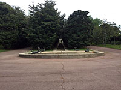
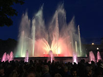

Aire Pur
Jardins de Joan Maragall

Aquest jardins van ser creats per a un riu al començament del segle XX. Són elegants amb avingudes arbrades, amplies extensions de gespa, fonts ornamentals, escultures a l’aire lliure i un palau que es una residència reial.
La Font Màgica té uns 7.000 milions de combinacions possibles d'aigua i llum gràcies a la possibilitat que té de conjugar els elements hidràulics i d'il·luminació de què disposa. Consulta les coreografies programades de la font.
Els horaris d'aquesta font són els següents:
PRIMAVERA - ESTIU: d'abril a octubre
Espectacle amb música:
Abril, maig i ocyubre
Dijous, divendres i dissabtes: 21.00 i 21:30 h.
Juny, juliol, agost i setembre
Dimecres, dijous, divendres, dissabtes, i diumenges: 21:30 i 22:00 h.
TARDOR - HIVERN: de novembre a març
Espectacle amb música:
Dijous, divendres i dissabtes: 20:00 i 20:30 h.